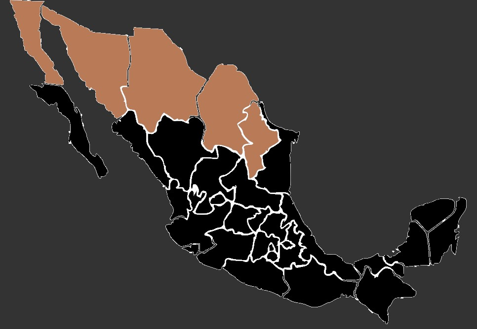

La mosca del desierto, también conocida como "mosca de la arena" o "mosca de la arena del Sahara", es una especie de mosca que se encuentra en regiones desérticas.
forma: Estas moscas suelen tener un tamaño pequeño a mediano, generalmente miden entre 6 y 10 milímetros de longitud. Su cuerpo es alargado y delgado, con una forma aerodinámica que les permite moverse ágilmente entre las dunas y el aire.
Color: La mosca del desierto suele tener un color que varía desde tonos marrones claros hasta tonos más oscuros, lo que le ayuda a camuflarse entre la arena. Algunas especies pueden tener patrones o marcas en el cuerpo, aunque en general su coloración se mimetiza con el entorno desértico.
Cabeza: Sus ojos son grandes y prominentes, típicos de los insectos voladores, compuestos por múltiples facetas que les permiten una excelente visión periférica y detección de movimientos. Tienen antenas largas y delgadas que utilizan para detectar olores, vibraciones y señales químicas en su entorno. Estas antenas son cruciales para la búsqueda de alimento y para la interacción con otros individuos de su especie.
Alas: Poseen un par de alas membranosas y transparentes que les permiten volar con agilidad. Estas alas suelen ser largas en proporción a su cuerpo y les facilitan el desplazamiento en las corrientes de aire del desierto.
forma: Estas moscas suelen tener un tamaño pequeño a mediano, generalmente miden entre 6 y 10 milímetros de longitud. Su cuerpo es alargado y delgado, con una forma aerodinámica que les permite moverse ágilmente entre las dunas y el aire.
Color: La mosca del desierto suele tener un color que varía desde tonos marrones claros hasta tonos más oscuros, lo que le ayuda a camuflarse entre la arena. Algunas especies pueden tener patrones o marcas en el cuerpo, aunque en general su coloración se mimetiza con el entorno desértico.
Cabeza: Sus ojos son grandes y prominentes, típicos de los insectos voladores, compuestos por múltiples facetas que les permiten una excelente visión periférica y detección de movimientos. Tienen antenas largas y delgadas que utilizan para detectar olores, vibraciones y señales químicas en su entorno. Estas antenas son cruciales para la búsqueda de alimento y para la interacción con otros individuos de su especie.
Alas: Poseen un par de alas membranosas y transparentes que les permiten volar con agilidad. Estas alas suelen ser largas en proporción a su cuerpo y les facilitan el desplazamiento en las corrientes de aire del desierto.
La mosca del desierto habita en regiones desérticas alrededor del mundo, especialmente en áreas como el Sahara en África, el desierto de Mojave en América del Norte, el desierto de Gobi en Asia y otros desiertos cálidos y áridos. Prefieren áreas donde hay arena suelta y seca, ya que se adaptan bien a ese tipo de terreno.
Son insectos diurnos y están más activos durante las horas de luz solar. Buscan alimento, se reproducen y realizan sus actividades durante el día. Son generalmente necrófagas o detritívoras, lo que significa que se alimentan de materia orgánica en descomposición, como restos de animales muertos, vegetación en descomposición u otros desechos orgánicos.
Tienen adaptaciones fisiológicas que les permiten conservar agua y resistir las altas temperaturas y la sequedad del ambiente desértico. Estas adaptaciones incluyen la capacidad de cerrar los espiráculos (aberturas respiratorias) para reducir la pérdida de agua. La mosca del desierto, conocida también como mosca de la arena, puede encontrarse en diversos estados de México que presentan características desérticas o semidesérticas. Algunas de las regiones donde se han reportado avistamientos o donde es posible encontrar esta especie incluyen a Baja california, Sonora, Chihuahua, Coahuila y Durango
Son insectos diurnos y están más activos durante las horas de luz solar. Buscan alimento, se reproducen y realizan sus actividades durante el día. Son generalmente necrófagas o detritívoras, lo que significa que se alimentan de materia orgánica en descomposición, como restos de animales muertos, vegetación en descomposición u otros desechos orgánicos.
Tienen adaptaciones fisiológicas que les permiten conservar agua y resistir las altas temperaturas y la sequedad del ambiente desértico. Estas adaptaciones incluyen la capacidad de cerrar los espiráculos (aberturas respiratorias) para reducir la pérdida de agua. La mosca del desierto, conocida también como mosca de la arena, puede encontrarse en diversos estados de México que presentan características desérticas o semidesérticas. Algunas de las regiones donde se han reportado avistamientos o donde es posible encontrar esta especie incluyen a Baja california, Sonora, Chihuahua, Coahuila y Durango
 Estas moscas son atraídas por restos de animales muertos, carroña o cadáveres en descomposición. Se alimentan de los tejidos en descomposición y de los fluidos corporales de estos restos.
Además de los cadáveres, también se alimentan de materia orgánica en descomposición, como restos de plantas o cualquier otro material orgánico en descomposición que encuentren en su hábitat desértico. En ocasiones, pueden alimentarse de excrementos de animales, ya que estos pueden contener nutrientes y materia orgánica que son utilizados por estas moscas.
Además de los cadáveres, también se alimentan de materia orgánica en descomposición, como restos de plantas o cualquier otro material orgánico en descomposición que encuentren en su hábitat desértico. En ocasiones, pueden alimentarse de excrementos de animales, ya que estos pueden contener nutrientes y materia orgánica que son utilizados por estas moscas.
• Son capaces de resistir temperaturas extremadamente altas. Pueden soportar condiciones de calor intenso que serían letales para muchos otros insectos, gracias a sus adaptaciones fisiológicas para conservar el agua y regular la temperatura corporal.
• Estas moscas pueden ser transportadas por el viento a largas distancias. Son capaces de aprovechar corrientes de aire para desplazarse y colonizar nuevas áreas, lo que les permite expandirse por regiones desérticas distantes.
• Tienen un ciclo de vida relativamente corto. Desde la etapa de huevo hasta la adultez, pueden completar su desarrollo en un período de tiempo sorprendentemente breve, adaptándose así a las condiciones cambiantes y a menudo difíciles de los desiertos.
• Aunque se alimentan principalmente de materia orgánica en descomposición, algunas especies de moscas del desierto han desarrollado adaptaciones para sobrevivir con dietas más variadas, incluyendo la capacidad de alimentarse de fluidos de plantas y de insectos muertos.
• Estas moscas pueden ser transportadas por el viento a largas distancias. Son capaces de aprovechar corrientes de aire para desplazarse y colonizar nuevas áreas, lo que les permite expandirse por regiones desérticas distantes.
• Tienen un ciclo de vida relativamente corto. Desde la etapa de huevo hasta la adultez, pueden completar su desarrollo en un período de tiempo sorprendentemente breve, adaptándose así a las condiciones cambiantes y a menudo difíciles de los desiertos.
• Aunque se alimentan principalmente de materia orgánica en descomposición, algunas especies de moscas del desierto han desarrollado adaptaciones para sobrevivir con dietas más variadas, incluyendo la capacidad de alimentarse de fluidos de plantas y de insectos muertos.